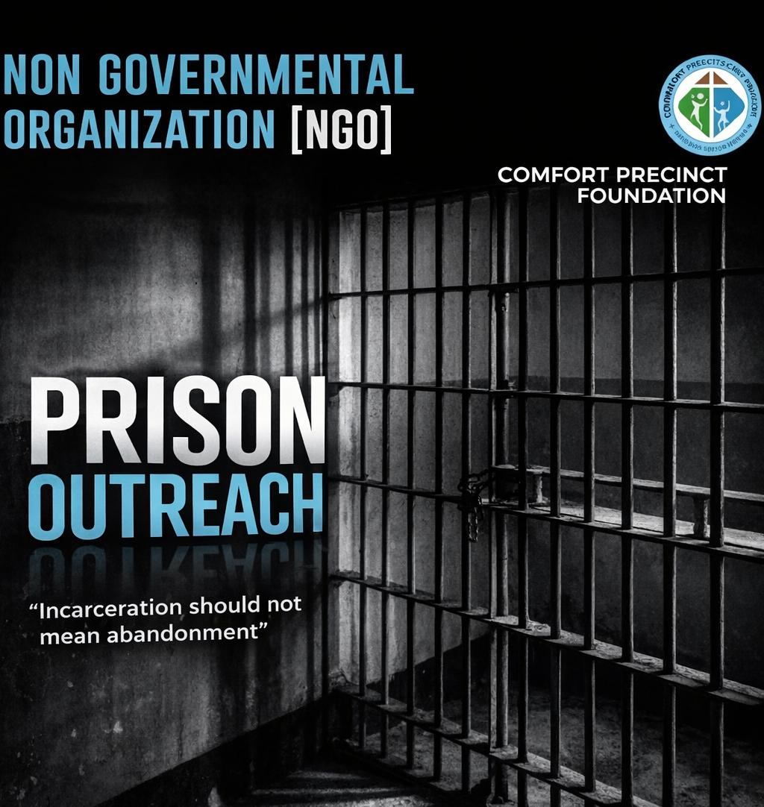
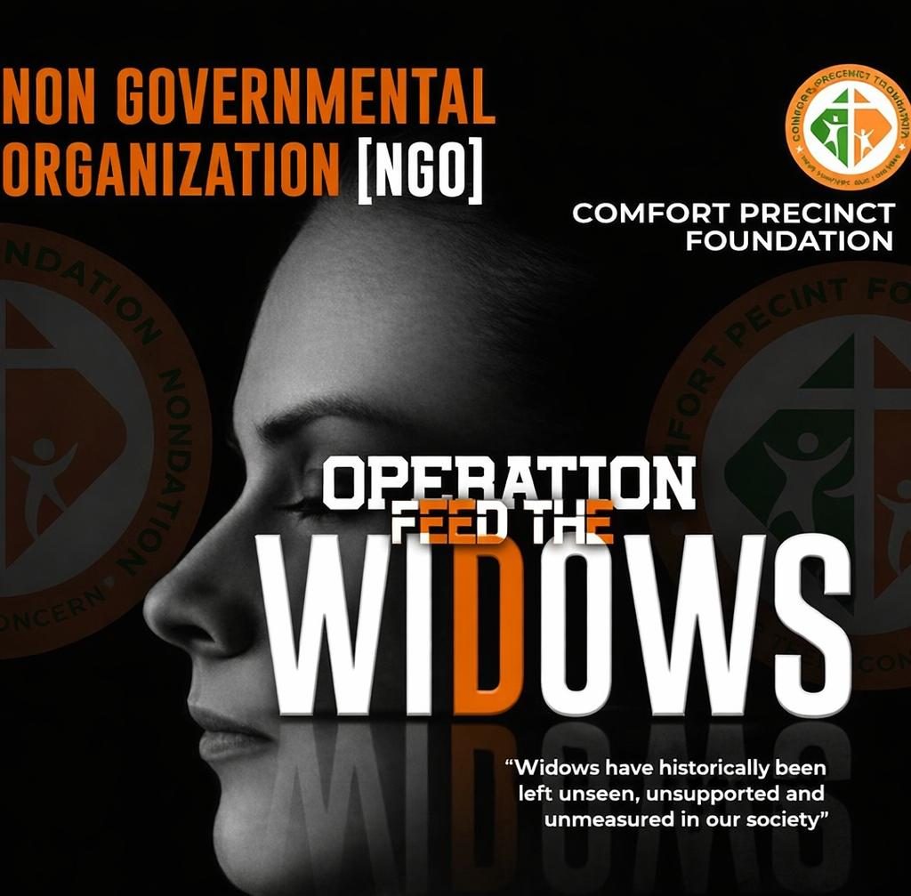
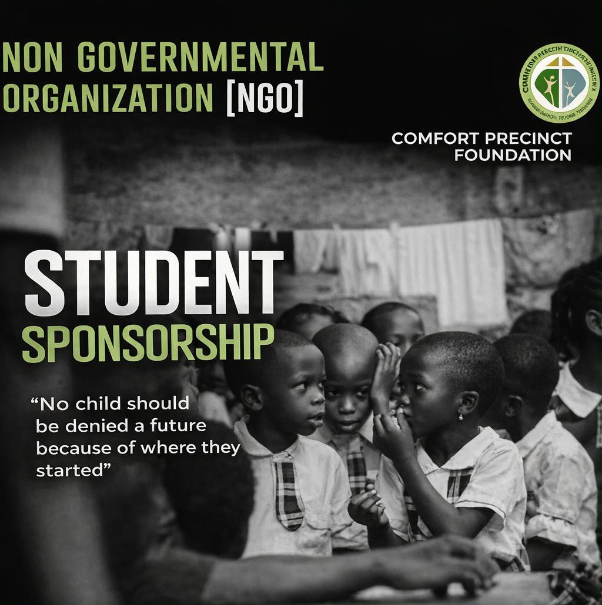

Your Comfort
Is Our
Concern.
Every person deserves safety, care, and a future worth believing in. We go where the need is greatest and stay until the work is done.
Every person deserves safety, care, and a future worth believing in. We go where the need is greatest and stay until the work is done.
Who We Are
Comfort Precinct Foundation was founded on October 18, 2018, with a clear purpose to stand in the gap for individuals and communities who need support the most.
Guided by structure and a strong sense of responsibility, we carry out focused initiatives each year that create real, lasting impact.
Every project we undertake is rooted in accountability, transparency, and a commitment to ensuring that no effort and no person is overlooked.
To inform, uplift, and support vulnerable individuals and communities through meaningful initiatives that create real opportunities and lasting change.
To build a society where compassion leads action, and every individual has access to dignity, support, and the opportunity to live a better life.
We are guided by transparency, accountability, and genuine care ensuring that every contribution is used responsibly and every action creates measurable impact.
What We Stand For
Providing relief, care, and essential support to individuals and families facing hardship.
Equipping people with knowledge, resources, and opportunities to build independent and sustainable lives.
Supporting access to learning and creating pathways for young people to grow and succeed.
What We're Doing Now
Every project we run is a direct response to a real need. These are the lives we are walking alongside right now.

Active · 2026Providing essential items such as toiletries and blankets to inmates, alongside awareness and support sessions to promote dignity and rehabilitation.

Active · 2026Continuing our commitment to supporting widows through food assistance and empowerment initiatives that promote stability and independence.

Active · 2026Supporting underprivileged students in public primary and secondary schools with resources and financial assistance to keep them in school.
Latest from CPF
Stay updated with important moments, outreach stories, reflections, and major activities happening across the Foundation.
A closer look into recent outreach efforts, community impact, and ongoing initiatives across the Foundation.
Watch Update
Photo 1

Photo 2
Honouring the lives and legacy of pioneer members whose impact, service, and commitment helped shape the Foundation's journey and mission.
View TributeYour support helps us reach more lives, strengthen communities, and create lasting impact. Every action counts.
Support our initiatives and help us extend care, dignity, and opportunity to those who need it most. Every contribution, big or small, makes a real difference.
Donate NowJoin our community and be part of the hands and hearts driving meaningful change. Your time and skills can transform lives in ways you may not yet imagine.
Become a Volunteer.jpeg)
.jpeg)
.jpeg)